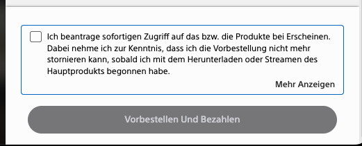

wad - we are doomed
wad - Keine Welt für Geringverdiener, GTA VI und Bitcoin
Die Welt hat wertvolle Tipps auf Lager, die Helfende wissen müssen, um nicht selbst zum Opfer zu werden. Das Problem: Auf die catchy headline folgt der Hinweis, dass man die lebensnotwendigen Informationen nur bekommt, wenn man Welt+ aboniert. Tja Pech gehabt, liebe GeringverdienerInnen!
Das Dilemma der digitalen Güter
GTA VI steht in den Startlöchern! Seit Monaten steigt der/die/das Hyper-Level, jedes kleine noch so unbedeutende Detail wird in Click-Bait-Titeln verwurstet.
Eine Sache stößt den Fans jetzt schon sauer auf: Rockstar Games wird das Spiel nur digital herausbringen. Das ist auf vielen Ebenen absurd und falsch.
Die Preise für große Titel sind mit der aktuellen Konsolen-Generation ohnehin gestiegen. 2020 waren 60 Euro üblich, nun sind wir bei der 80 Euro Marke angelangt. Das ist eine Inflation von 33%. Das übersteigt die gesamte Inflationsrate, die in diesem Zeitraum bei rund 22% liegt.
Das digitale Release bedeutet für den Publisher eine Menge Vorteile. Die gesamten Herstellungs- und Distributionskosten für die Disc fallen weg. Oder anders gesagt: Die Marge steigt.
Außerdem wird der Second-Hand-Handel komplett ausgetrocknet. Der Publisher kontrolliert die Preisgestaltung also noch sehr lange nach dem Release. Wenn du Spiele auf eBay nicht weiterverkaufen kannst, gibt es für den Publisher keinen Grund, den Neu-Preis zu senken.
Das ist noch nicht alles: Der Publisher behält auch die volle Kontrolle über das Spiel. Du denkst, mit dem Download gehört das Spiel dir? Es wäre nicht das erste Mal, wenn Medien aus den digitalen Bibliotheken oder von den Geräten verschwinden.
Aber warte - es wird noch ungemütlicher: Wenn du das Spiel z.B. im PlayStation Store kaufst, dann gibt es kein zurück mehr. Erinnerst du dich noch an die 14-Tage-Frist für Güter, die du online kaufst? Eine sinnvolle Regelung - vielleicht gefällt dir der Matsch ja gar nicht und du willst vom Kauf zurücktreten! Das gilt im Prinzip auch für Downloads - aber hier greift Sony in die “Trickkiste”:

Du kannst das Spiel nur kaufen, wenn du dein Recht auf Widerspruch abtrittst. Stell dir vor, Amazon schickt deine Schuhe erst los, wenn du auf dein Rückgaberecht verzichtest! Die Schuhe wurden ja vorher ausgiebig getestet und bewertet - sie müssen dir also gefallen!
Und dann so Kleinigkeiten, dass du auf der PlayStation z.B. einen Account brauchst, um das Spiel zu spielen.
GTA VI wird aller Voraussicht nach großartig. Keine Frage. Aber die Spielindustrie - nicht nur Rockstar - reizen die Geduld der Spielergemeinschaft immer weiter aus. Und irgendwie fragt man sich schon, wann der Gesetzgeber hier mal einschreitet…weil als KonsumentIn sind die Chancen für wirkungsvollen Protest gering. Spiele sind nicht substituierbar, besitzen aber im Prinzip die gleichen Eigenschaften wie andere Güter.
( Ich hatte über das Thema übrigens schon einmal ausführlich geschrieben. )
Mining lohnt nicht
Der Kurs für Bitcoin dümpelt nun schon eine ganze Weile so vor sich hin und liegt im Moment bei knapp 62.000 Euro. Das Problem: Das Minen kostet um die 78.000 Euro - Strom, (Abschreibungen auf) Hardware, dies das.
Also passieren zwei Dinge: Die Miner verkaufen Bitcoin. Was den Preis zusätzlich drückt. Oder sie schalten ihre Hardware ab. Was die Hashrate reduziert und sich auf die “Mining-Schwierigkeit” auswirkt. Wenn die Schwierigkeit sinkt, kann man - vereinfacht und übertrieben gesagt - wieder mit gewöhnlicher Consumer-Hardware Bitcoin minen. ( Ich hab das an anderer Stelle nicht nur einmal genauer erklärt.)
Wenn wir doch nur noch ein paar Grafikkarten hätten! Aber die hängen ja bei Oracle, Amazon und Co. in den Rechenzentren und erzeugen Slop…